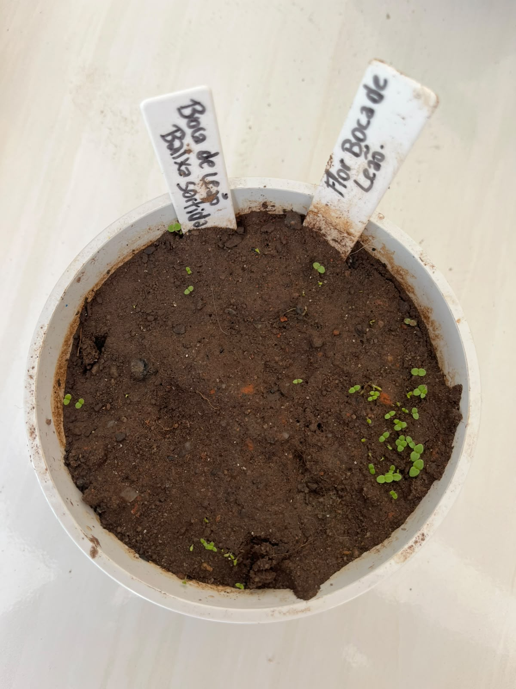

Jardim da Biodiversidade

Nome científico: Antirrhinum majus
Família botânica: Plantaginaceae
Origem: Região do Mediterrâneo
Vaso na Horta Escolar Viva: ⚪ Branco
A Boca de Leão é uma flor ornamental conhecida pelo formato diferente de suas flores, que lembram a boca de um pequeno animal quando pressionadas. Suas cores variadas deixam os jardins mais alegres e atrativos.
É uma planta muito utilizada em espaços educativos por sua beleza e por despertar a curiosidade dos estudantes sobre a diversidade das plantas.
A Boca de Leão gosta de ambientes iluminados e pode deixar jardins e vasos muito coloridos com seus diferentes tons de flores.
Suas flores podem atrair abelhas, borboletas e outros visitantes do jardim, contribuindo para a polinização e para o equilíbrio do ambiente.
Na Horta Escolar Viva, a Boca de Leão representa a diversidade de formas, cores e funções que as flores oferecem à natureza.
O nome "Boca de Leão" surgiu porque suas flores possuem um formato curioso que lembra uma pequena boca quando observada de perto.
Aponte a câmera do celular para acessar mais informações sobre esta flor.